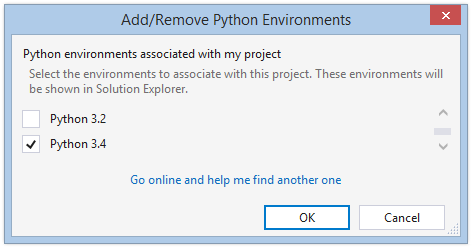

Right-click on Python Environments and select Add Virtual Environment.

Choose a base interpreter (we recommend Python 2.7 or Python 3.4).

Your virtual environment will appear under Python Environments.

To run this project, you will need to create a virtual environment and install some dependencies.
We recommended creating a virtual environment and installing the
dependent packages in that virtual environment from the included
requirements.txt file.
Right-click on Python Environments and select Add Virtual Environment.
Choose a base interpreter (we recommend Python 2.7 or Python 3.4).
Your virtual environment will appear under Python Environments.
Right-click on requirements.txt and select Copy Full Path.

Right-click on the virtual environment and select Install Python Package.

In the text box, type: -r "<press Ctrl-V to paste full
path to requirements.txt>"

If you do not want to use a virtual environment, you can also add one of your global environments to your project and install the dependencies there.
Right-click on Python Environments and select Add/Remove Python Environments.

Choose one or more installed environments.
Your selected environments will appear under Python Environments.